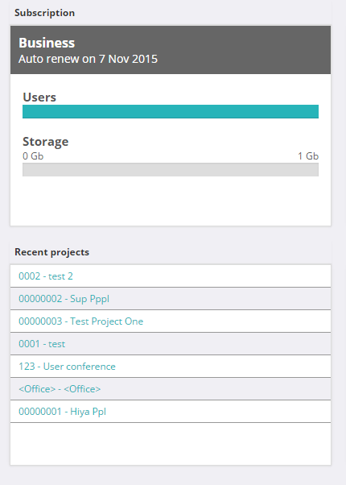

Layout the elements on the main to resemble as closely as possible the following
Notes
- The two cards should be 1/4 the screen width for medium and large screens, 1/2 the screen for small and full width for extra small view.
- The screenshow is of the extra small view.
